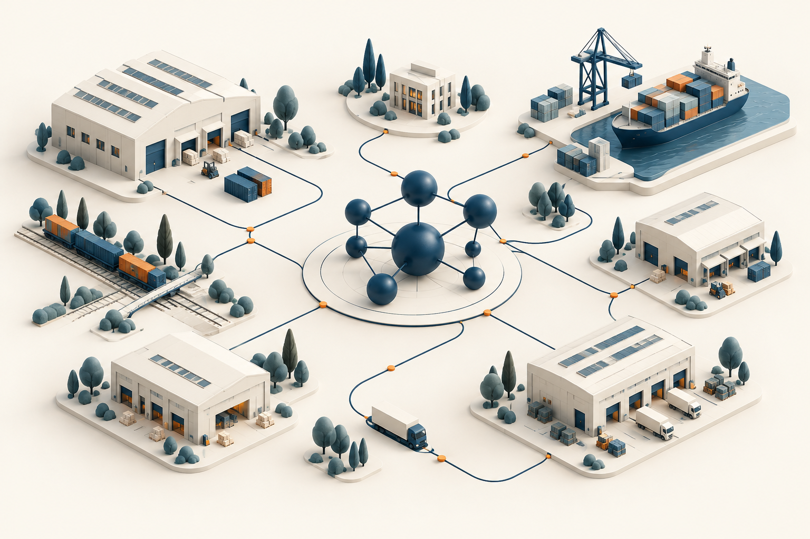

01
Supply Chain Optimization
Connecting the right resources, places, and decisions across the supply chain.
SUPPLY CHAIN OPTIMIZATION & AI LABORATORY
We connect optimization, artificial intelligence, and real-world challenges to rethink how supply chains work.

01 / ABOUT THE LAB
SCOAI Lab is a research group at the intersection of supply chain optimization and artificial intelligence.
We apply operations research, machine learning, and data-driven methods to solve complex problems in supply chain and logistics. Our work brings analytical thinking and practical challenges together, turning data into informed decisions.
02 / RESEARCH AREAS
We employ AI to explore better ways to plan, predict, and make decisions.
Connecting the right resources, places, and decisions across the supply chain.
Balancing availability, uncertainty, and resources with intelligent planning.
Finding patterns in data to better anticipate what comes next.
Mathematical models and algorithms for complex operational problems.
Turning evidence and insights into thoughtful, actionable choices.
03 / RESOURCES FOR RESEARCHERS
Keep the research moving. Explore community-maintained deadlines, all in one familiar space.
Find your next venue across computer science. Track paper and abstract deadlines by research area, rank, and country.
A focused view of secure multi-party computation, cryptography, and privacy-preserving research opportunities.
04 / OUR TEAM
Good research starts with people who ask better questions.
We are a diverse team of researchers, students, and collaborators passionate about solving real-world challenges in supply chains using cutting-edge methods.